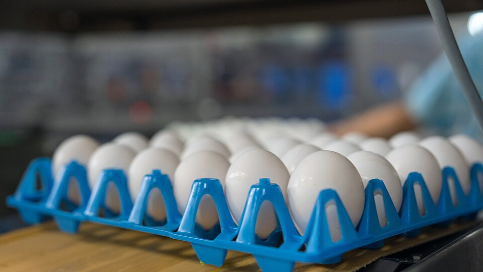
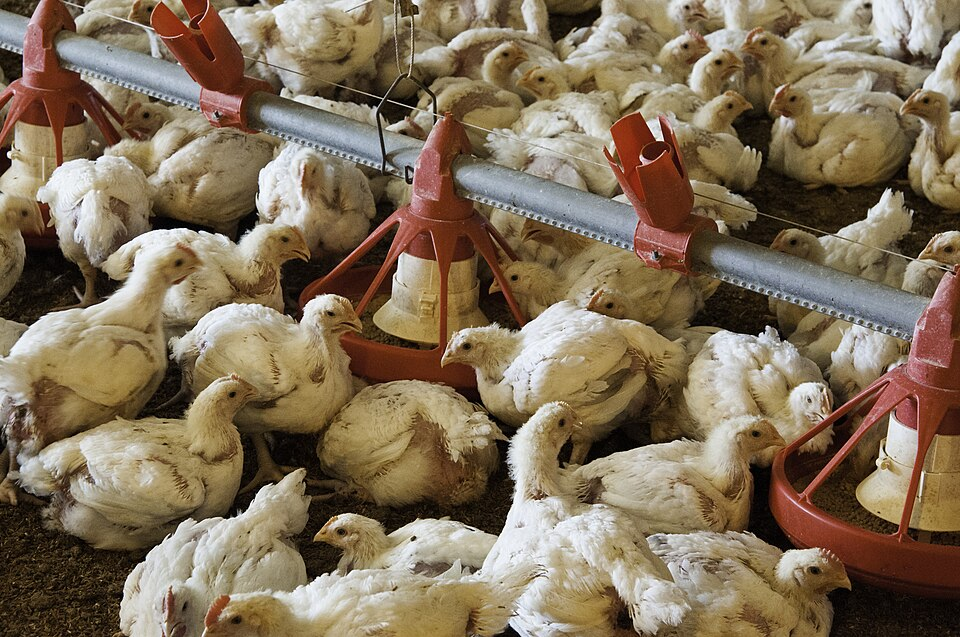
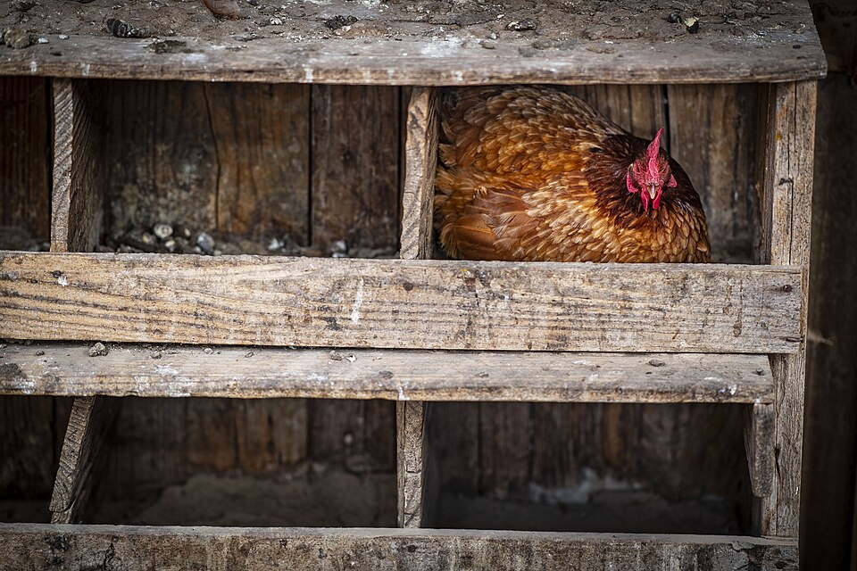
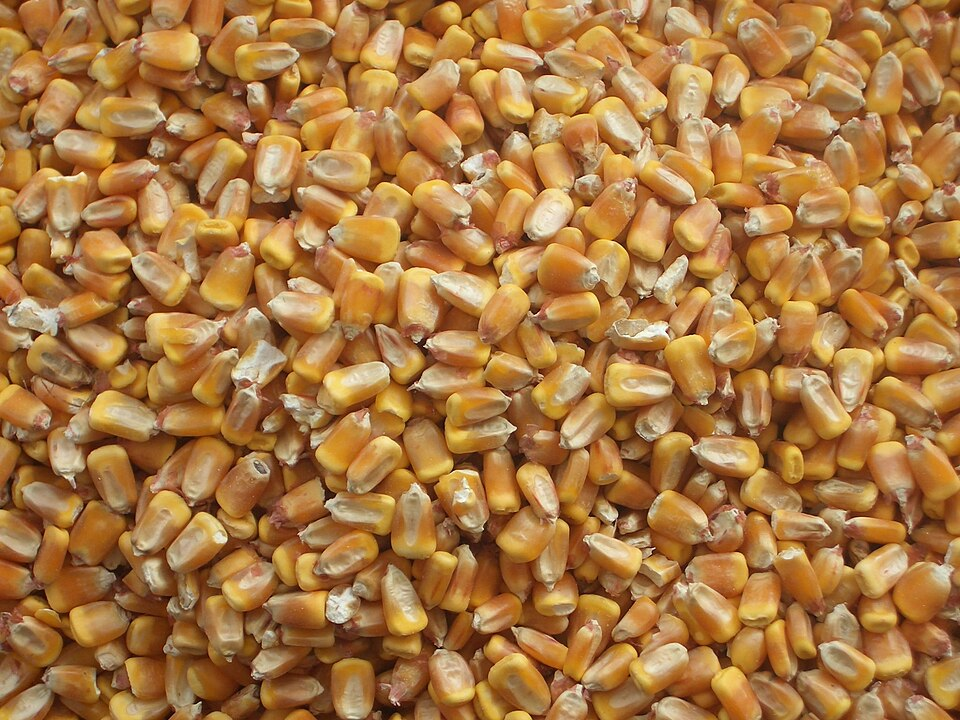
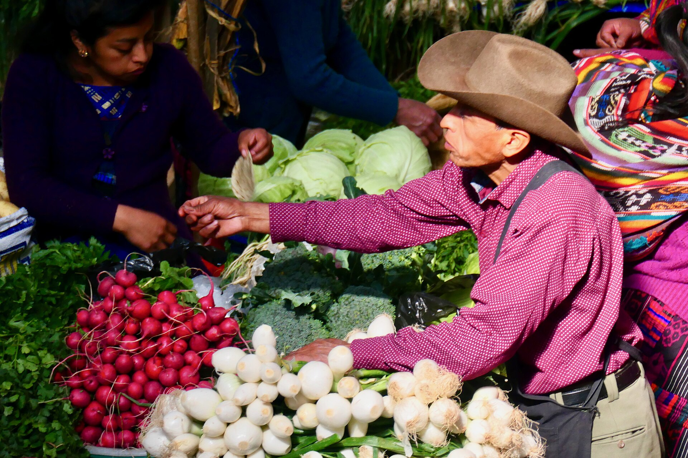
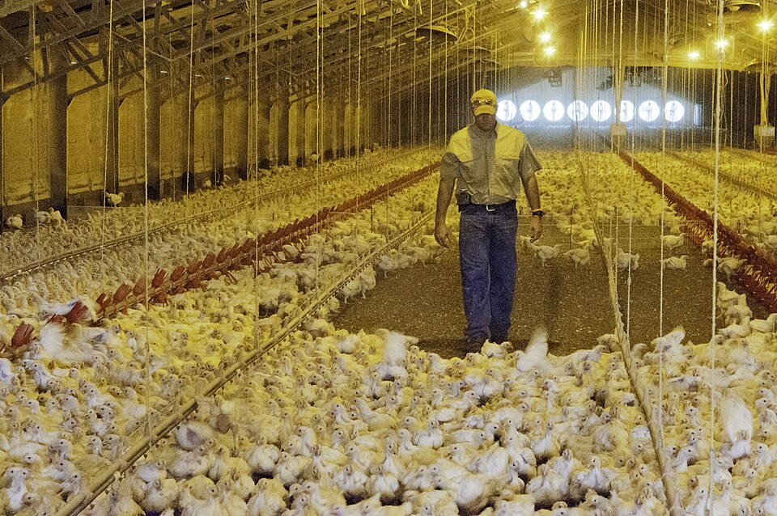
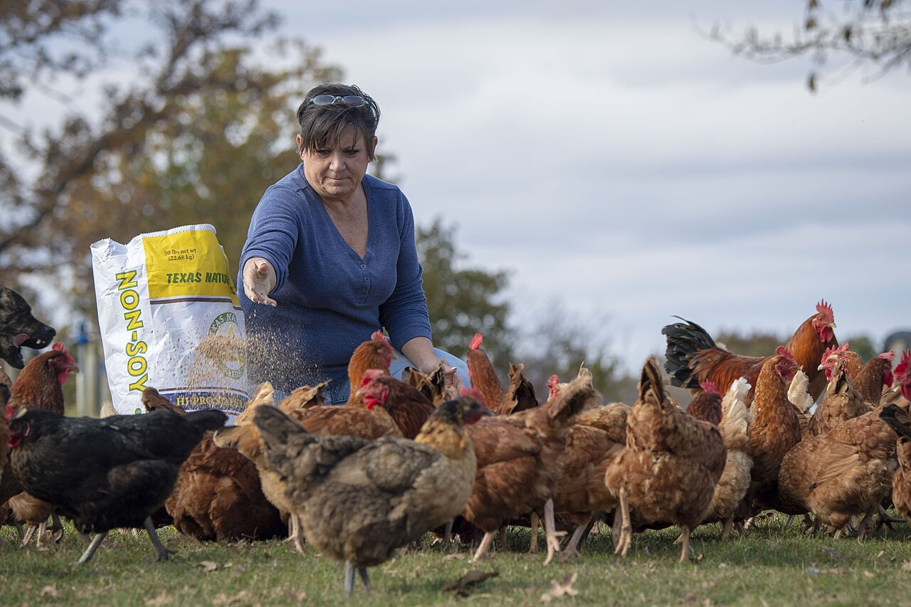

Huevo mediano
Caja de 360 · +20.89% frente a 2025
- Q392.06 2022
- Q449.50 2023
- Q377.59 2024
- Q324.26 2025
- Q392.00 2026

Edición 2026-W46 · 9 de noviembre de 2026
01 / PreciosPrecio de referencia mayorista · La Terminal, Ciudad de Guatemala · Fuente: MAGA
Comparado con el dato del 3 de noviembre, publicado en la edición anterior.




Los 12 precios de referencia quedaron iguales a los de la semana pasada. Al cierre de esta edición, MAGA no había publicado su informe semanal del 2 al 6 de noviembre, así que el contexto sigue siendo el de octubre: el huevo mediano promedió 20.89% más que en octubre de 2025, y el pollo entero lleva tres octubres en Q14.50 por libra.
En su último informe semanal, del 26 al 30 de octubre, MAGA reportó oferta normal de huevo y pollo, y esperaba precios estables si no cambiaban las condiciones de abastecimiento y demanda.
Caja de 360 · +20.89% frente a 2025
Libra · Sin cambio frente a 2025
Quintal · +7.13% frente a 2025
Promedio de octubre en La Terminal, según el informe semanal de MAGA del 26 al 30 de octubre de 2026, el último publicado al 9 de noviembre.
† Cálculo de Chiik News con datos de MAGA. Fuentes: Precios diarios · Informe semanal del 26 al 30 de octubre · Informe mensual de septiembre

La ciencia, aterrizada al galpón.
Mercado de Chichicastenango, Guatemala, 2020.

En Madagascar, investigadores entrevistaron en abril de 2023 a 79 avicultores (13 de traspatio y 66 de granjas semi-intensivas), 10 profesionales de salud animal y 10 personas que atienden agroveterinarias. Querían entender por qué se usan mal los antibióticos en granjas pequeñas y medianas.
Muchos productores semi-intensivos veían el antibiótico como indispensable para que sus aves rindieran. Lo daban para prevenir, sobre todo al llegar los pollitos o al cambiar de alimento, y los profesionales describieron uso sin diagnóstico. No se pedía receta para comprarlos. Los productores de huevo reportaron seguir vendiendo huevo de gallinas en tratamiento. Y los propios investigadores no pudieron calcular cuánto antibiótico se usaba, porque los productores entrevistados no llevaban registros escritos.
Los obstáculos no eran solo de conocimiento: márgenes estrechos, poco acceso a crédito y poco poder para negociar con los compradores. Madagascar no es Guatemala, y el estudio es exploratorio, con una muestra por conveniencia. Pero la lección práctica es clara: si no anotas qué diste, cuándo y por qué, no puedes saber si sirvió ni cuánto te costó. Cualquier tratamiento, siempre con indicación de tu veterinario.
Estudio cualitativo con entrevistas (79 avicultores y 20 actores de la cadena) · Pollo de engorde, gallina de postura y aves de traspatio · Madagascar. No probado en Guatemala.
Foto ilustrativa: nave de engorde en Estados Unidos. No forma parte del estudio.
Cada tratamiento: producto, lote, fecha de inicio y fin, nave, signos que viste, quién lo indicó y la fecha en que termina el tiempo de retiro antes de vender aves o huevo.
Entrevistas semiestructuradas en malgache, con análisis temático, en Analamanga, la región de mayor densidad avícola del país. Los productores semi-intensivos consultaban sobre todo a técnicos y veterinarios de las empresas proveedoras de pollito y alimento; los de traspatio, a vendedores de agroveterinarias, a veterinarios privados y a otros productores.
Los vendedores reportaron despachar antibióticos de importancia crítica como primera línea, o probar varios hasta que uno funcionara. En ese grupo, solo cuatro entrevistados habían oído hablar de resistencia a los antibióticos, y con una idea generalmente inexacta. Ningún productor había recibido una inspección oficial sobre su uso de antibióticos. Los autores proponen que los proveedores de pollito y alimento entreguen material impreso sobre enfermedades comunes y una bitácora para registrar producción y tratamientos.
Limitaciones: Estudio exploratorio con muestreo intencional y por conveniencia, no representativo. No hay cifras de consumo de antibióticos porque los productores no llevaban registros escritos. La guía de entrevistas no preguntó de forma específica por capacitación en uso de antibióticos.
Fuente Molia S, Tsimok'Haja Ramahatafandry I, Rakotoharinome M, et al. Antibiotic stewardship challenges in Madagascar's poultry sector: informality, knowledge gaps, and market constraints. PLoS One, 2026. PMC13742957. Ver artículo
En enero de 2023, el servicio veterinario de Costa Rica visitó una propiedad en Parrita, en la costa del Pacífico, como parte de su vigilancia de aves de traspatio cerca de humedales. El dueño contó que la semana anterior habían muerto unas 50 aves de varias especies (patos, gallinas, codornices, gansos y chompipes), cerca del 41% del total. El laboratorio y la secuenciación confirmaron influenza aviar H5N1 de alta patogenicidad.
Cuando llegaron los inspectores, la mayoría de las aves se veía normal; algunas respiraban con dificultad y comían menos. En la primera visita, la única muestra de sangre positiva fue la de un pato; tres gallinas salieron negativas. Tres días después, tres de cuatro gallinas ya tenían anticuerpos. Se sacrificaron unas 65 aves, se desinfectó el lugar y se permitió repoblar dos meses después.
Los autores ubican el caso en el punto de contacto entre aves domésticas y silvestres: el virus llegó a la región con aves migratorias, los patos pueden portarlo sin enfermarse, y el agua contaminada es una vía de contagio descrita. Es un solo caso y no se hizo en Guatemala. Lo aplicable es la bioseguridad de siempre: que patos y aves silvestres no compartan agua ni comedero con tus gallinas, y que una mortalidad fuera de lo normal se reporte al servicio veterinario oficial.
Reporte de un brote en un solo traspatio · Gallinas, patos y otras aves · Costa Rica. No probado en Guatemala.
Foto ilustrativa: gallina en un nido. No corresponde al caso de Costa Rica.
Mortalidad diaria por nave o corral, con los signos que observes, y una nota si hay patos, aves silvestres o agua abierta cerca. Una mortalidad que se sale de tu promedio es la primera alarma.
Serología por ELISA de competencia y AGID; qRT-PCR con protocolos de USDA y CDC, con valores de Ct entre 31.7 y 37.2; secuenciación de nueva generación. El sitio de corte de la hemaglutinina (REKRRKR↓G) confirmó alta patogenicidad, clado 2.3.4.4b. El Centro Colaborador de la OMS en St. Jude aisló el virus en huevo embrionado y secuenció los ocho segmentos; en NVSL no se aisló y las pruebas específicas del clado fueron negativas.
Los sueros reaccionaron con fuerza ante antígenos norteamericanos de H5 de baja patogenicidad; un suero tuvo título mayor de 1:8000. En la filogenia, la secuencia de las gallinas quedó en el grupo del Pacífico, pero distinta de las demás de Costa Rica. Los autores plantean, como hipótesis, que una exposición previa a virus de baja patogenicidad pudo atenuar el cuadro.
Limitaciones: Un solo brote, con pocas muestras y datos observacionales. La mortalidad la reportó el dueño. Las cargas virales fueron bajas y un laboratorio no logró aislar el virus. La hipótesis de protección por exposición previa no se pudo comprobar.
Fuente León B, Brenes H, Trovao NS, et al. Detection of H5N1 HPAIV Clade 2.3.4.4b Avian Influenza Virus in Backyard Chickens in Costa Rica. Viruses, 2026. PMC13431611. Ver artículo
Foto ilustrativa: granja de pollo de engorde en Estados Unidos. No es de 2006.
En 2006, dos investigadores del laboratorio de referencia de la OIE y la FAO para influenza aviar, en Italia, hicieron el balance: de 1959 a 1998, los brotes de influenza aviar habían afectado a 23 millones de aves; de 1999 a 2005, a más de 200 millones. Italia perdió 13 millones de aves en 1999-2000, Estados Unidos 5 millones en 2002, Países Bajos 30 millones en 2003 y Canadá 17 millones en 2004. Aun con buenos servicios veterinarios, la bioseguridad en las granjas no alcanzó para frenar esas epidemias.
El artículo dejó dos ideas que siguen vigentes. La primera: el virus de alta patogenicidad (H5 y H7) puede surgir de virus de baja patogenicidad que circulan en aves silvestres, sobre todo acuáticas, y que mutan después de entrar a las aves domésticas. Por eso también había que vigilar los virus que causan enfermedad leve. La segunda: el virus entra a la granja por contacto directo o indirecto con aves infectadas, por movimiento de aves, equipo, vehículos o material contaminado. Para los autores, la bioseguridad era la primera y más importante forma de prevención.
El caso de Costa Rica de esta edición sigue ese mismo guion: aves de traspatio junto a un humedal, patos en la parvada y anticuerpos contra virus de baja patogenicidad. Controlar quién y qué entra a tu granja, mantener aparte a patos y aves silvestres, y anotar la mortalidad diaria para notar a tiempo un cambio son prácticas que responden a esas lecciones. La conexión con hoy es nuestra interpretación.
